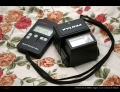

my198611242010-12-31 13:245 分
操作性 5.00功能性 5.00美观性 5.00趣味性 5.00耐用性 5.00性价比 5.00
cdld2007-10-26 21:124 分
操作性 4.00功能性 4.00美观性 4.00趣味性 4.00耐用性 3.00性价比 5.00

9666966692005-09-18 00:444.58 分
操作性 4.50功能性 4.50美观性 4.50趣味性 4.50耐用性 4.50性价比 5.00
NikonF4s2003-10-15 09:434.17 分
操作性 4.00功能性 4.50美观性 4.00趣味性 4.50耐用性 4.00性价比 4.00